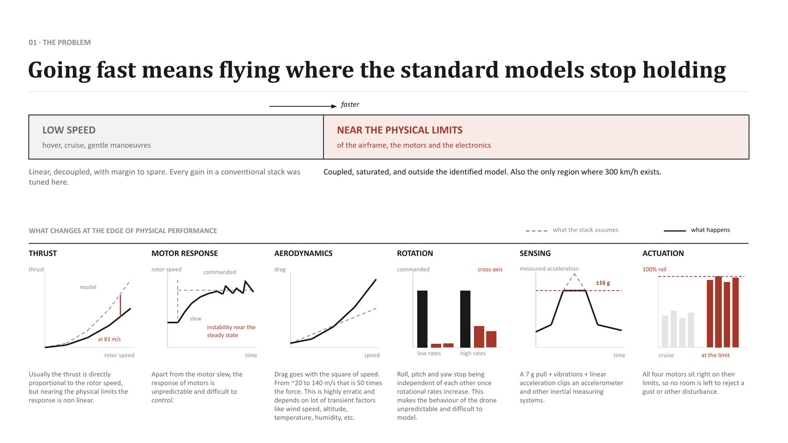
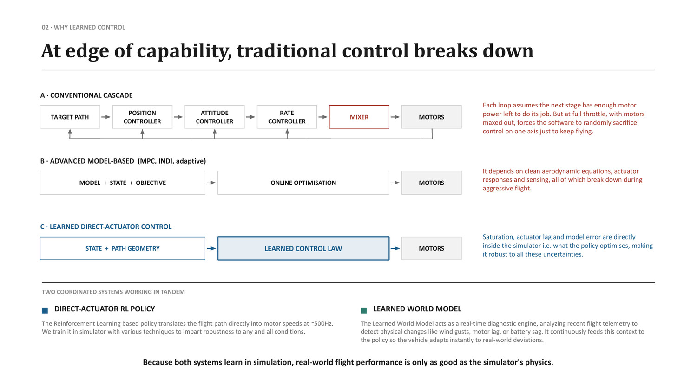
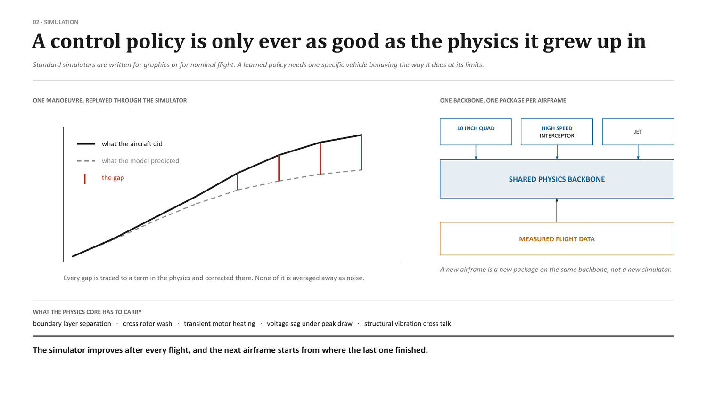
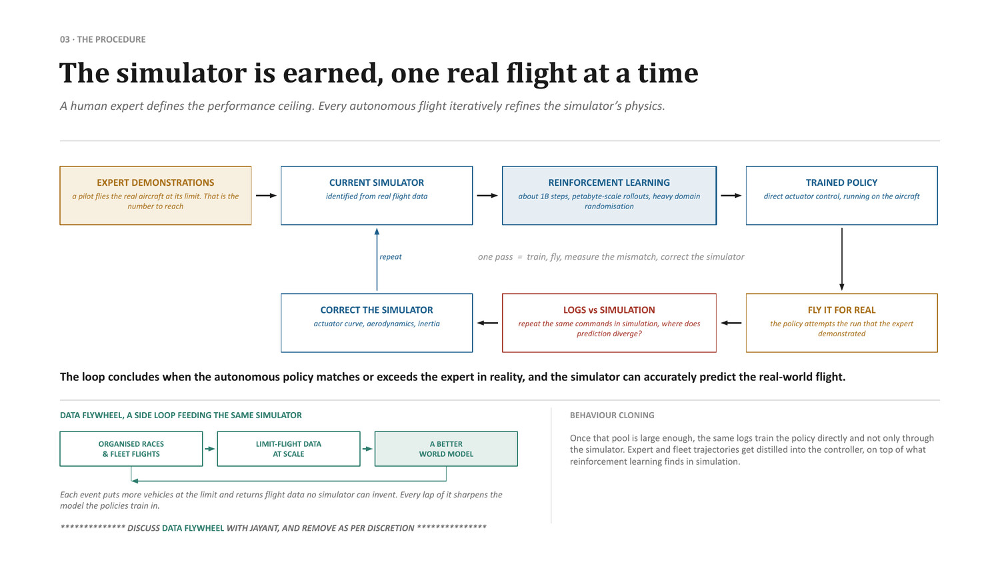

Robust Control for Fast Air Platforms
High-rate closed-loop flight control and physics-grounded modeling engineered for extreme dynamic pressures, high-G transitions, and actuator saturation. Integrates our physics backbone and simulation-to-real workflow to guarantee aerodynamic stability where standard linear models fail.
Flying where nominal aerodynamic assumptions collapse
Standard autopilots are tuned for benign flight regimes: low-speed cruise, gentle hover, and mild turns where aerodynamic forces are linear, control axes are decoupled, and actuators operate with comfortable margin. At speeds exceeding 300 to 650 km/h, during 7G terminal maneuvers, and in the trans-subsonic envelope, every nominal assumption breaks down simultaneously.
| Parameter | Nominal autopilot model | Observed high-speed reality |
|---|---|---|
| Dynamic pressure (q) | Assumed constant or slow-varying | Quadratically spikes by orders of magnitude, dramatically amplifying control surface effectiveness and aerodynamic loads. |
| Thrust & torque | Linear relationship with RPM / throttle | Severe rotor slip, blade stall, and compressor backpressure non-linearities at high Mach/airspeeds. |
| Cross-axis coupling | Roll, pitch, and yaw are independent | Aerodynamic downwash and high angular rates produce strong, non-separable gyroscopic and aerodynamic cross-coupling. |
| Actuator authority | Proportional reserve margin available | Control surfaces and propulsion sit on 100% saturation rails; no margin remains for classical error rejection. |
| Structural dynamics | Rigid airframe assumption | High aeroelastic flex and airframe vibration inject high-frequency noise into inertial rate gyros. |
| Sensor integrity | Unbiased linear accelerometer signals | Multi-axis sustained high-G loads combined with airframe resonance risk sensor clipping and filter divergence. |

Why classical cascades and online solvers break down
A · The cascaded PID architecture
Standard open-source and commercial autopilots employ cascaded loops: position feeds attitude, attitude feeds angular rate, and angular rate feeds an actuator mixer. Each tier operates under the implicit assumption that the subsequent tier possesses sufficient actuation bandwidth and torque to fulfill its demand. When a high-speed interceptor or cruise missile executes a violent terminal dive at maximum dynamic pressure, control surfaces reach mechanical deflection limits. Under saturation, the cascaded integrator winds up, forcing the mixer to arbitrarily sacrifice control on one axis to preserve another—often culminating in catastrophic departure from controlled flight.
B · Advanced model-predictive control (MPC)
Online numerical optimization (MPC) represents a theoretical improvement by explicitly incorporating state and actuator constraints. However, online solvers require closed-form aerodynamic equations and consistent convergence times. Under aggressive transonic maneuvers and turbulent atmospheric shear, online optimization suffers from severe computational latency jitter, demanding excessive power-hungry compute that cannot reliably meet hard real-time deadlines.

The physics-grounded simulation backbone
A control policy is only ever as dependable as the fidelity of the physical environment in which it was formed. Rather than relying on generic synthetic simulators, Apollyon builds an uncompromising, flight-validated physics foundation.
The core methodology enforces rigorous calibration: every flight sortie is instrumented densely with high-rate black-box logging. Following recovery, the exact real-world command sequences are replayed through the simulator. Any divergence between the physical flight telemetry and simulated prediction is treated not as statistical noise, but as an unmodeled physical phenomenon that must be identified and explicitly incorporated into the aerodynamic and mechanical core.
| Physical domain | Specific modeled phenomenon | Consequence if omitted |
|---|---|---|
| Aerodynamics | Boundary layer separation, shock-induced flow detachment, and non-linear downwash interactions between tandem lifting surfaces. | Unpredictable stall during high-angle-of-attack evasive pull-outs. |
| Propulsion & thermal | Transient motor coil heating, ESC thermal throttling, back-EMF saturation, and battery cell internal resistance voltage drop under peak current. | Unmodeled thrust decay leading to altitude drop during sustained high-G terminal dives. |
| Aeroelastics | Fuselage flex, fin flutter, and structural harmonic vibration transmission into the IMU mounting plate. | High-frequency control surface oscillation and servo motor overheating. |
| Actuation physics | Servo gearbox backlash, rate limits under dynamic air loads, and deadband non-linearities. | Phase lag and pilot-induced-oscillation (PIO) during transonic transit. |
Apollyon maintains a single unified physics backbone. Each airframe—the Ahuti interceptor, the Nightshade jet munition, the HACM-350 cruise missile, or the Kamikaze USV—exists as a parameterized aerodynamic package residing on the identical simulation substrate. When a flight-test campaign improves our high-rate aerodynamic damping model, that fidelity immediately propagates to every program across the company.

High-rate closed-loop neural execution
The deployed flight policy evaluates at approximately 500 Hz directly within the onboard compute core. The system bypasses intermediate PID stages entirely, mapping current aircraft state, measured dynamics, and target path coordinates straight to individual actuator commands.
Direct-actuator neural policy
Computes direct surface deflections and motor throttle targets at 500 Hz. Because the policy was conditioned on non-linear aerodynamics and full actuator saturation inside the simulation backbone, it operates naturally at the mechanical limits of the vehicle without integrator windup.
High-rate adaptive state representation
A fast online diagnostic representation continually analyzes recent flight history to infer changing flight conditions—including crosswinds, air density variations, asymmetric battle damage, or structural payload shifts—supplying instant contextual conditioning to the primary policy.
The resulting controller demonstrates exceptional robustness against unmodeled turbulence, sudden control surface clipping, and extreme dynamic pressure shifts, maintaining razor-sharp trajectory adherence throughout the entire terminal engagement.
Cross-platform deployment & compounding velocity
While the specific policy weights are optimized for each individual vehicle geometry, the identification methodology, the high-fidelity physics core, and the simulation-to-real pipeline are completely shared. When developing a new platform, engineering teams do not write new flight control logic from scratch; they execute a parameterized training campaign within the proven pipeline.
| Platform | Speed regime | Primary control challenge | Execution rate |
|---|---|---|---|
| Ahuti Interceptor | 337+ km/h | Tail-sitter vertical launch transition and high-speed terminal collision homing. | 500 Hz direct actuator |
| Nightshade ADX-1 | 650+ km/h | Turbojet loiter-to-dash transition and steep 380+ km/h terminal dive guidance. | 400 Hz elevon / throttle |
| HACM-350 | Mach 0.7–0.8 | Trans-subsonic high dynamic pressure sea-skimming and 80° terminal dive onto fortified targets. | 500 Hz fin actuation |
| Kamikaze USV | 48+ knots | Rough sea-state hydrodynamic stability, wave-slamming mitigation, and dynamic waterjet trim. | 100 Hz hydraulic trim |

Platforms carrying this subsystem
Depends on: Edge Compute & Custom Inference Engine, Flight Software Stack.